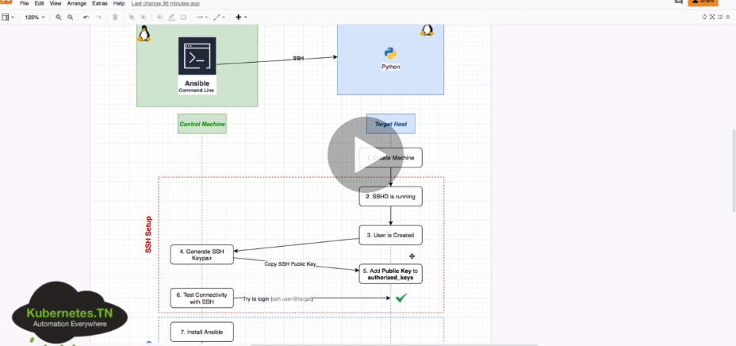
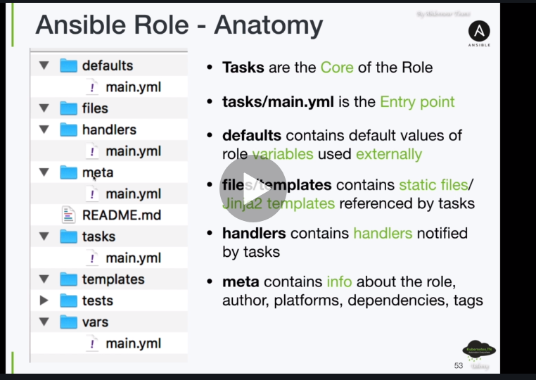

ANSIBLE
-
Es un software de gestión de la configuración automática y remota.
- Nos permite centralizar la configuración de numerosas servidores, dispositivos de red y Cloud Providers de una forma sencilla y automatizada.
-
Podremos aprovisionar servidores en AWS, Azure o VMWARE y automatizar la configuración de dichos servidores.
-
Ventajas:
- No requiere agentes
- Multiplataforma, eficiente y seguro
- Aprovisiona infraestructuras
- Configura dispositivos de red
-
Se necesita un Ansible Controller ejecutando en un SO Linux. Se puede administrar equipos Windows/Max pero el Ansible Controller debe ser LINUX.
Instalación
yum install ansibleRedHatdnf install ansibleFedoraapt-get install ansibleUbuntupip install ansiblePython-Pip-
brew install ansibleMAC -
ansible --versioncomprobamos la versión instalada.
Inventarios
- Ansible trabaja ejecutando tareas contra diferentes equipos remotos, dispositivos de red o APIs.
- Nos permiten definir dichos equipos, agruparlos y especificar valores grupales o individuales de los mismos.
-
Formato Ansible INI, YAML o JSON.
-
/etc/ansible/hostsfichero por defecto donde se define o ruta concreta-i file. -
ansbible.cfgfichero de configuración. -
EJEMPLO:
[masters] # nombre general
master ansible_host=IP/FQDN/service_docker ansible_user=remote_user ansible_private_key_file=xxx.pem # nombre - maqquina a conectar - usuario a conectar - private_key
- Comprobamos la conexión:
ansible -i inventory -m ping all
ansible -m ping -i hosts master-m de modulo -i fichero y maquina
master | SUCCESS => {
"ansible_facts": {
"discovered_interpreter_python": "/usr/bin/python"
},
"changed": false,
"ping": "pong"
}
Comando básico
ansible -i <inventory_path> -m {modulo} -a "{modulo opciones}" <nodos: all/master>-
Ejemplo:
ansible -i hosts -m shell -a "echo 'hola'" all -
Ejemplo:
ansible -i hosts -m shell -a "echo 'hola'" all - Ejemplo:
ansible -i hosts -m shell -a "ls -l /etc" all/masters - Ejemplo:
ansible -i hosts -b -m user -a "name=andy state=present shell=/bin/bash" allatacamos a todos los users(all) y le creamos un usuario andy. -b de superuser, con una shell concreta
Ayuda Ansible
ansible-doc -l
- Ejemplo de ayuda de un módulo concreto:
ansible-doc (-s) user
Playbook
-
Los Playbooks describen configuraciones, despliegue, y orquestación en Ansible. El formato del Playbook es YAML. Cada Playbook asocia un grupo de hosts a un conjunto de roles. Cada rol está representado por llamadas a lo que Ansible define como Tareas.
-
Ejemplo:
- name: Demo Install Ansible
hosts: all
become: yes
tasks:
## instalando ansible usando apt-get
- name: install ansible using apt
apt:
name: ansible
state: present
- Ejemplo:
cat play.yml
- hosts: test1
tasks:
- shell: echo "Hola Mundo desde Ansible y Jenkins" > /tmp/hola-ansible.txt
- Ejemplo:
- hosts: test1
tasks:
- debug:
var: MSG
- Ejemplo:
- hosts: test1
tasks:
- debug:
var: MSG
- debug:
msg: "Yo no me voy a ejecutar :("
tags: no-exec
- debug:
msg: "Yo sí me voy a ejecutar :)"
tags: si-exec
- Ejemplo completo de crear un user:
- hosts: master
become: yes # ser superuser
tasks:
- name: create user andy
user:
name: andy
state: present
shell: /bin/bash
- name: create user miguel
user: name=andy state= present
- ORDEN:
ansible-playbook -i hosts playbook.yml --syntax
ansible-playbook -i hosts playbook.yml --check (solo simula)
Módulos
- Conocidos también task plugins o library plugins, son unidades discretas de código que se pueden utilizar desde linea de comandos o playbook.
-
Se suelen utilizar en el nodo de destino remoto y recopila los valores de retorno. Se pueden utilizar en ad-hoc commands, playbooks y roles.
-
Ejemplo módulo apt:
- name: Demo Install Ansible
hosts: all
become: yes
tasks:
## instalando ansible usando apt-get
- name: install ansible using apt
apt:
name: ansible
state: present
- Ejemplo módulo authorized_keys:
- hosts: master
become: yes # ser superuser
tasks:
- name: create user andy
user:
name: andy
state: present
shell: /bin/bash
- name: create ssh keys
authorized_keys:
user: andy
key: "{{ item }}"
state: present
with_file:
- ~/.ssh/id_rsa.pub
no_log: yes
Variables
- Ejemplo de variables para Ansible:
- name: Demo Install Ansible
hosts: all
become: yes
## definimos las variables
vars:
package: ansible
state: present
tasks:
## instalando ansible usando apt-get
- name: install ansible using apt
apt:
name: "{{ package }}"
state: "{{ state }}"
Condicionales
- Realizar tareas segun ciertas cosas o parámetros:
- Ejemplo condicional:
- name: Demo Install Ansible
hosts: all
become: yes
## definimos las variables
vars:
package: ansible
state: present
tasks:
## instalando ansible usando apt-get
- name: install ansible using apt
apt:
name: "{{ package }}"
state: "{{ state }}"
## indicando la condicion de solo en master
when: "'master' in inventory_hostname"
Bucles
- Ejemplo de bucle:
- name: Demo Install Ansible
hosts: all
become: yes
tasks:
## instalando ansible usando apt-get
- name: install ansible using apt
apt:
name: "{{ item }}"
state: present
## indicando bucle de paquetes a instalar
loop:
- ansible
- apache2
- name: Demo Install Ansible
hosts: all
become: yes
tasks:
- name: create users
user:
name: "{{ item }}"
state: present/absent
## indicando bucle de crear users
with_items:
- andy
- miguel
- mario
Roles
- Los roles son formas de cargar automáticamente una estructura de archivos/directorios, archivos de variables, tareas y controladores basados en una estructura de archivos conocida.
- Agrupar contenido por roles permite compartir los roles con otros usuarios y poder reutilizar código.
-
Los roles esperan que los archivos esten en ciertos directorios, deben incluir al menos uno de estos.
-
Ejemplo de role:
- name: Play to demo roles
hosts: all
become: yes
## roles block
roles:
## the role we want to install
- apache ## dentro de este directorio hay muchos files, playbooks, tasks...
Ansible Galaxy
- Es un sitio gratuito para buscar, descargar, calificar y revisar toto tipo de roles de Ansible desarrollados por la comunidad y puede ser una excelente manera de impulsar nuestros proyectos de automatización.
-
El cliente ansible-galaxy está incluido en Ansible.
-
Ejemplo:
## ansible-galaxy
## install a role in 'roles' folder
ansible-galaxy install "ansible.docker" -p roles/
## create a role folders/files structure
ansible-galaxy init "my-role"
## search for a role
ansible-galaxy search 'docker'
Resumen
- Repaso de ansible.
- Es un software de gestión de la configuración automática y remota.
- Nos permite centralizar la configuración de numerosas servidores, dispositivos de red y Cloud Providers de una forma sencilla y automatizada.
- Podremos aprovisionar servidores en AWS, Azure o VMWARE y automatizar la configuración de dichos servidores.
-
Ventajas:
- No requiere agentes
- Multiplataforma, eficiente y seguro
- Aprovisiona infraestructuras
- Configura dispositivos de red
-
Se conecta por SSH.
Inventory
- Sirve para listar todos los hosts, todas las ips que tenemos que aprovisionar.
- Con
cat /etc/ansible/hostsvemos un ejemplo de los hosts que tenemos que administrar:
## [webservers] - nombre del grupo
## alpha.example.org
## beta.example.org
## 192.168.1.100
## 192.168.1.110
## db[01:03].intranet.mydomain.net
## db02.intranet.mydomain.net
- Probamos conexión con algun hosts poniendo
ansible alpha.example.org -m ping:
[isx46410800@miguel miguelamoros.github.io]$ ansible localhost -m ping
localhost | SUCCESS => {
"changed": false,
"ping": "pong"
}
- Podemos indicarle otro fichero con otros host poniendo la opción -i file_hosts.
Módulos
-
Por defecto si no pongo el modulo -m, coge shell como módulo:
[isx46410800@miguel miguelamoros.github.io]$ ansible localhost -a 'echo hola miguel'
localhost | CHANGED | rc=0 >>
hola miguel
#
[isx46410800@miguel miguelamoros.github.io]$ ansible localhost -m shell -a 'uname -a'
localhost | CHANGED | rc=0 >>
Linux miguel 5.3.11-100.fc29.x86_64 #1 SMP Tue Nov 12 20:41:25 UTC 2019 x86_64 x86_64 x86_64 GNU/Linux
- Instalamos un paquete en la máquina remota como superusuario(-b) y preguntando la contraseña de root en esa máquina(-K):
[isx46410800@miguel miguelamoros.github.io]$ ansible localhost -b -K -m dnf -a 'name=vim state=present'
BECOME password:
localhost | SUCCESS => {
"changed": false,
"msg": "Nothing to do",
"rc": 0,
"results": []
}
Playbook
- Se escribe un yaml y son objetos que se escriben tareas que han de hacer en nuestras máquinas remotas:
---
- hosts: localhost
tasks:
- name: instala vim
dnf: name=vim state=present
become: true
- name: saludar
shell: echo hola
- Resultado:
[isx46410800@miguel ansible]$ ansible-playbook playbook01.yaml -K
BECOME password:
[WARNING]: provided hosts list is empty, only localhost is available. Note that the implicit localhost does not
match 'all'
PLAY [localhost] ****************************************************************************************************
TASK [Gathering Facts] **********************************************************************************************
ok: [localhost]
TASK [instala vim] **************************************************************************************************
ok: [localhost]
TASK [saludar] ******************************************************************************************************
changed: [localhost]
PLAY RECAP **********************************************************************************************************
localhost : ok=3 changed=1 unreachable=0 failed=0 skipped=0 rescued=0 ignored=0
- otro ejemplo que maneja servicios:
- hosts: localhost
become: true
tasks:
- name: instala vim
dnf: name=vim state=present
- name: saludar
shell: echo hola
- name: detener apache
service: name=httpd state=stopped
Usuarios
- Podemos poner el usuario con la opción -u. No obstante en el fichero de configuración /etc/ansible/ansible.cfg podemos poner [defaults]remote_users=miguel y entonces cada orden cogerá como usuario miguel.
- Podemos cargar otro fichero de conf poniendo ANSIBLE_CONFIG=ruta_file_cfg.
Handlers
- Le pide a ansible que cuando haga una tarea success lo notifique para poder hacer otras cosas.
isx46410800@miguel ansible]$ cat playbook02.yaml
---
- hosts: localhost
become: true
tasks:
- name: instala apache
dnf: name=httpd state=present update_cache=true
notify:
- "Reinicia el servidor web"
handlers:
- name: reinicia el server apache
service: name=httpd state=restarted
[isx46410800@miguel ansible]$ ansible-playbook playbook02.yaml -K
BECOME password:
[WARNING]: provided hosts list is empty, only localhost is available. Note that the implicit localhost does not
match 'all'
PLAY [localhost] ****************************************************************************************************
TASK [Gathering Facts] **********************************************************************************************
ok: [localhost]
TASK [instala apache] ***********************************************************************************************
ok: [localhost]
PLAY RECAP **********************************************************************************************************
localhost : ok=2 changed=0 unreachable=0 failed=0 skipped=0 rescued=0 ignored=0
Nos saldría una notificación de un handler al instalar, no sale porque ya estaba instalado.
CURSO COMPLETO
Environment
- Vemos un ejemplo de como es un ambiente con Ansible, conectando una máquina central con el lenguaje Ansible hacia otros hosts con sistemas operativos y ordenando que tiene que tener cada cosa y como conectarse:


-
Nos conectamos a una instancia ubuntu aws por ssh:
[isx46410800@miguel .ssh]$ ssh -i mykeypair.pem ubuntu@18.134.164.27 -
Con el un usuario ubuntu de aws, creamos llaves para conectarnos a ese user:
ubuntu@ip-172-31-23-107:~$ sudo su -
root@ip-172-31-23-107:~# useradd ansible_user
root@ip-172-31-23-107:~# passwd ansibler_user
[isx46410800@miguel .ssh]$ ssh-keygen
-rw-------. 1 isx46410800 isx46410800 2602 Apr 2 23:22 ansibleuser
-rw-r--r--. 1 isx46410800 isx46410800 572 Apr 2 23:22 ansibleuser.pub
root@ip-172-31-23-107:/home/ubuntu/.ssh# vi authorized_keys
root@ip-172-31-23-107:/home/ubuntu# chown -R ubuntu .ssh/
-
Ahora podremos conectarnos con la llave privada al usuario ubuntu sin autenticar al tener copiada la llave publica:
[isx46410800@miguel .ssh]$ ssh -i ansibleuser ubuntu@18.134.164.27 -
Nos conectamos a un docker con fedora:
[isx46410800@miguel curso_ansible]$ docker run --name container -h container -p 2222:22 --privileged -d isx46410800/ansible:ssh -
Creamos un usuario y copiamos también las llaves al usuario para conectarnos:
[root@container docker]# adduser fedora
[root@container docker]# passwd fedora
[root@container docker]# cd /home/fedora/
[root@container fedora]# mkdir .ssh
[root@container fedora]# chmod 700 .ssh
[root@container fedora]# vi .ssh/authorized_keys
[root@container fedora]# chmod 600 .ssh/authorized_keys
[root@container fedora]# chown -R fedora /home/fedora/.ssh
Inventory
- Creamos un primer inventario para conectarnos a la máquina de amazon:
# conexión a un host remoto, indicando nombre host, ip, llave y usuario al que conectamos
ec2 ansible_host=18.134.164.27 ansible_private_key_file=~/.ssh/ansible_user ansible_ssh_user=ubuntu
- Probamos con la orden ansible -i inventario nombre_host -atributo opcion del atributo:
[isx46410800@miguel curso_ansible]$ ansible -i inventory01 ec2 -m ping
ec2 | SUCCESS => {
"ansible_facts": {
"discovered_interpreter_python": "/usr/bin/python3"
},
"changed": false,
"ping": "pong"
}
- El fichero de configuración de ansible está en /etc/ansible/ansible.cfg.
# este fichero de configuración se escriben reglas para grupos de hosts o hosts sueltos donde irán a buscar las cosas
por defecto a este archivo(/etc/ansible/ansible.cfg)
[defaults]
INVENTORY=./inventory01
- Vemos que conecta igual poniendo el inventario como que no:
[isx46410800@miguel curso_ansible]$ ansible ec2 -m ping
ec2 | SUCCESS => {
"ansible_facts": {
"discovered_interpreter_python": "/usr/bin/python3"
},
"changed": false,
"ping": "pong"
}
Módulos
-
Los módulos son la cantidad de opciones que podemos hacer a la hora de conectarnos con las máquinas: ping, package, service...
-
Vemos todas con la orden
ansible-doc --list:
ansible-doc file -
Hacer un ping:
ansible -i inventory01 ec2 -m ping -
Crear un directorio/file(absent, directory, file, hard, link, touch):
ansible -i inventory01 ec2 -m file -a 'path=/home/ubuntu/crear_directorio state=directory'
ansible -i inventory01 ec2 -m file -a 'path=/home/ubuntu/crear_directorio state=directory'
ec2 | CHANGED => {
"ansible_facts": {
"discovered_interpreter_python": "/usr/bin/python3"
},
"changed": true,
"gid": 1000,
"group": "ubuntu",
"mode": "0775",
"owner": "ubuntu",
"path": "/home/ubuntu/crear_directorio",
"size": 4096,
"state": "directory",
"uid": 1000
}
ubuntu@ip-172-31-23-107:~$ ls
crear_directorio
[isx46410800@miguel curso_ansible]$ ansible -i inventory01 ec2 -m file -a 'path=/home/ubuntu/crear_directorio/crear_file.txt state=touch'
ec2 | CHANGED => {
"ansible_facts": {
"discovered_interpreter_python": "/usr/bin/python3"
},
"changed": true,
"dest": "/home/ubuntu/crear_directorio/crear_file.txt",
"gid": 1000,
"group": "ubuntu",
"mode": "0664",
"owner": "ubuntu",
"size": 0,
"state": "file",
"uid": 1000
}
ubuntu@ip-172-31-23-107:~$ ls crear_directorio/
crear_file.txt
- Copiar un fichero:
[isx46410800@miguel curso_ansible]$ ansible -i inventory01 ec2 -m copy -a 'src=./ansible.cfg dest=/home/ubuntu/crear_directorio'
ec2 | CHANGED => {
"ansible_facts": {
"discovered_interpreter_python": "/usr/bin/python3"
},
"changed": true,
"checksum": "bf35d403c825217ade9f009d13cbdd6fc0a3078f",
"dest": "/home/ubuntu/crear_directorio/ansible.cfg",
"gid": 1000,
"group": "ubuntu",
"md5sum": "15b402b635fbd568d10b82d4b67da871",
"mode": "0664",
"owner": "ubuntu",
"size": 208,
"src": "/home/ubuntu/.ansible/tmp/ansible-tmp-1617401616.4248621-11162-62473546166429/source",
"state": "file",
"uid": 1000
}
ubuntu@ip-172-31-23-107:~$ ls crear_directorio/
ansible.cfg crear_file.txt
# otro ejemplo de crear un file con contenido y copiarlo
ansible ec2 -m copy -a "content='TopSecret' dest='/opt/data/secret.txt'"
- Añadir una linea a un fichero:
[isx46410800@miguel curso_ansible]$ cat file.txt
fichero de ejemplo para modulo de añadir lineas
[isx46410800@miguel curso_ansible]$ ansible -i inventory01 ec2 -m lineinfile -a 'path=/home/ubuntu/crear_directorio/file.txt line="añadimos esto al modulo lineinfile"'
ec2 | CHANGED => {
"ansible_facts": {
"discovered_interpreter_python": "/usr/bin/python3"
},
"backup": "",
"changed": true,
"msg": "line added"
}
ubuntu@ip-172-31-23-107:~$ cat crear_directorio/file.txt
fichero de ejemplo para modulo de añadir lineas
añadimos esto al modulo lineinfile
- Descargar contenido de un URL y enviarlo en un fichero a un host remoto:
[isx46410800@miguel curso_ansible]$ ansible -i inventory01 ec2 -m uri -a 'url=https://api.github.com/users/isx46410800/repos dest=/home/ubuntu/crear_directorio/repos.json'
- Instalar/borrar un paquete:
[isx46410800@miguel curso_ansible]$ ansible -i inventory01 ec2 -m package -a 'name=vim state=present' -b
[isx46410800@miguel curso_ansible]$ ansible -i inventory01 ec2 -m package -a 'name=vim state=present' --become
-b para ser superusuario -k para preguntar passwd
si hemos creado un user vamos a la maquina y añadimos en la fichero /etc/sudoers: user ALL=(ALL:ALL) NOPASSWD:ALL
-
Encender un servicio:
ansible ec2 -m service -a "name=nginx state=started" -
Crear un usuario:
ansible ec2 -m user -a "name=miguel state=present" -
Hacer una orden normal de comando:
[isx46410800@miguel curso_ansible]$ ansible dev,prod -m command -a 'cat /etc/passwd'
Playbooks
- En vez de hacerlo en una linea con comandos, se crea un playbook en formato YAML para hacer ahi el listado de tareas a realizar a los hosts:
- name: primer ejemplo playbook
hosts: ec2
tasks:
# creamos un file con contenido dentro
- name: hello file is copied
copy:
content: "Hello World"
dest: /home/ubuntu/crear_directorio/hello.txt
# creamos un segundo file con contenido dentro
- name: hi file is copied
copy:
content: "Hi World"
dest: /home/ubuntu/crear_directorio/hi.txt
# comprimimos estos dos ficheros
- name: hello and hi files compressed
archive:
path:
- /home/ubuntu/crear_directorio/hello.txt
- /home/ubuntu/crear_directorio/hi.txt
dest: /home/ubuntu/crear_directorio/hh.zip
format: zip
-
Lo lanzamos con la orden:
[isx46410800@miguel curso_ansible]$ ansible-playbook playbook01.yaml -
Ejemplo de deploy de una web al host remoto:
[isx46410800@miguel curso_ansible]$ cat playbook02-web-static.yaml
- name: ejemplo deploy web static
hosts: ec2
become: yes
tasks:
# instalamos apache
- name: installing apache server
package:
name: apache2
state: present
# encendemos el servicio apache
- name: apache running
service:
name: apache2
state: started
# creamos el directorio de var para meter la web de index.html
- name: creating var directory
file:
path: /var/www/html
state: directory
# deploy web statica
- name: static website is deployed
uri:
url: https://raw.githubusercontent.com/abdennour/example-static-website/ansible-course/index.html
dest: /var/www/html #/usr/share/nginx/html
- Resultado:
[isx46410800@miguel curso_ansible]$ ansible-playbook playbook02-web-static.yaml
PLAY [ejemplo deploy web static] *************************************************************************************
TASK [Gathering Facts] ***********************************************************************************************
ok: [ec2]
TASK [installing apache server] ***************************************************************************************
ok: [ec2]
TASK [apache running] *************************************************************************************************
ok: [ec2]
TASK [creating var directory] ****************************************************************************************
ok: [ec2]
TASK [static website is deployed] ************************************************************************************
changed: [ec2]
PLAY RECAP ***********************************************************************************************************
ec2 : ok=5 changed=1 unreachable=0 failed=0 skipped=0 rescued=0 ignored=0
Variables
- Podemos usar variables en el fichero de playbook para no tener que escribir lo mismo:
- name: ejemplo deploy web static
hosts: ec2
become: yes
vars:
webserver: apache2
webserver_dir: /var/www/html
tasks:
# debug sirve para mostrar mensajes
- name: debug
debug:
msg: "El valor del servidor es {{ webserver }}"
# instalamos apache
- name: installing apache server
package:
name: "{{ webserver }}"
state: present
# encendemos el servicio apache
- name: apache running
service:
name: "{{ webserver }}"
state: started
# creamos el directorio de var para meter la web de index.html
- name: creating var directory
file:
path: "{{ webserver_dir }}"
state: directory
# deploy web statica
- name: static website is deployed
uri:
url: https://raw.githubusercontent.com/abdennour/example-static-website/ansible-course/index.html
dest: "{{ webserver_dir }}" #/usr/share/nginx/html
- También podemos poner en la orden de ansible-playbook la opcion --extra-vars e indicar la variable y contenido y piyaría esa variable como prioridad en vez de la del playbook:
[isx46410800@miguel curso_ansible]$ ansible-playbook playbook04-debug-vars-web-static.yaml
PLAY [ejemplo deploy web static] *************************************************************************************
TASK [Gathering Facts] ***********************************************************************************************
ok: [ec2]
TASK [debug] *********************************************************************************************************
ok: [ec2] => {
"msg": "El valor del servidor es apache2"
}
#
[isx46410800@miguel curso_ansible]$ ansible-playbook playbook04-debug-vars-web-static.yaml --extra-vars webserver=httpd
PLAY [ejemplo deploy web static] *************************************************************************************
TASK [Gathering Facts] ***********************************************************************************************
ok: [ec2]
TASK [debug] *********************************************************************************************************
ok: [ec2] => {
"msg": "El valor del servidor es httpd"
}
- Tabién se puede crear un fichero de variables y llamar a donde están las variables:
[isx46410800@miguel curso_ansible]$ cat vars.yaml
webserver: apache2
webserver_dir: /var/www/html
#
- name: ejemplo deploy web static
hosts: ec2
become: yes
vars_files:
- vars-yaml
tasks:
# debug sirve para mostrar mensajes
- name: debug
debug:
msg: "El valor del servidor es {{ webserver }}"
- Ejemplo pipeline con diferentes Branchs de git:
- name: ejemplo deploy web static
hosts: ec2
become: yes
vars:
webserver: apache2
webserver_dir: /var/www/html
git_branch: ansible-course-index-v2
tasks:
# instalamos apache
- name: installing apache server
package:
name: "{{ webserver }}"
state: present
# encendemos el servicio apache
- name: apache running
service:
name: "{{ webserver }}"
state: started
# creamos el directorio de var para meter la web de index.html
- name: creating var directory
file:
path: "{{ webserver_dir }}"
state: directory
# deploy web statica
- name: static website is deployed
uri:
url: https://raw.githubusercontent.com/abdennour/example-static-website/{{ git_branch }}/index.html
dest: "{{ webserver_dir }}" #/usr/share/nginx/html
- Podemos crear una variable de registro con el contenido de una tarea:
- name: ejemplo deploy web static
hosts: ec2
become: yes
tasks:
# instalamos apache
- name: installing apache server
package:
name: apache2
state: present
register: apache_install_output
- name: print register in terminal
debug:
var: apache_install_output
- name: copy the output
copy:
content: "{{ apache_install_output }}"
dest: /home/ubuntu/crear_directorio/register.txt
- Ansible facts:
- name: ansible facts
hosts: ec2
become: yes
#gather_facts: no
tasks:
# print ansible_facts
- name: print ansible_facts
debug:
var: ansible_facts
se puede poner con una variable de gather_facts: no y no saldrian los facts
Otras variables como inventory_hostaname, hostvars, group_names, groups...
Práctica DEV y PROD
-
Nos queremos conectar a 3 instancas AWS, una de dev y dos de prod.
-
Creamos nuevo inventario:
### conexion para una maquina de desarrollo y dos de produccion
dev1 ansible_host=35.177.51.40 ansible_private_key_file=~/.ssh/ansible_user ansible_ssh_user=ubuntu
prod1 ansible_host=3.8.212.118 ansible_private_key_file=~/.ssh/ansible_user ansible_ssh_user=ubuntu
prod2 ansible_host=35.178.101.37 ansible_private_key_file=~/.ssh/ansible_user ansible_ssh_user=ubuntu
[prod]
prod1
prod2
[dev]
dev1
-
Probamos conexión despues de meterle la llave publica a cada uno:
[isx46410800@miguel curso_ansible]$ ansible -i inventory02_prod_dev all -m ping -
Podemos simplicar variables añadiendo un grupo de variables:
### conexion para una maquina de desarrollo y dos de produccion
dev1 ansible_host=35.177.51.40 ansible_private_key_file=~/.ssh/ansible_user ansible_ssh_user=ubuntu
prod1 ansible_host=3.8.212.118
prod2 ansible_host=35.178.101.37
[prod]
prod1
prod2
[prod:vars]
ansible_private_key_file=~/.ssh/ansible_user
ansible_ssh_user=ubuntu
git_branch=ansible-course-index-v2
[dev]
dev1
[dev:vars]
git_branch=ansible-course
Tambien se puede crear un directorio host_vars -> dev1 --> vars.yaml con las 3 variables asignadas separados por dos puntos.
tambien se puede crear un directorio group_vars -> prod -> vars.yaml con las variables del grupo prod:vars. Luego se borraria porque ya las tenemos ahí.
- Resultados:
[isx46410800@miguel curso_ansible]$ ansible-playbook playbook09-proyect_dev-prod.yaml
PLAY [ejemplo deploy en dev y prod] **********************************************************************************
TASK [Gathering Facts] ***********************************************************************************************
ok: [prod1]
ok: [dev1]
ok: [prod2]
TASK [installing apache server] **************************************************************************************
ok: [prod1]
ok: [prod2]
changed: [dev1]
TASK [apache running] ************************************************************************************************
ok: [prod1]
ok: [dev1]
ok: [prod2]
TASK [creating var directory] ****************************************************************************************
ok: [prod1]
ok: [dev1]
ok: [prod2]
TASK [static website is deployed] ************************************************************************************
changed: [prod1]
changed: [prod2]
changed: [dev1]
PLAY RECAP ***********************************************************************************************************
dev1 : ok=5 changed=2 unreachable=0 failed=0 skipped=0 rescued=0 ignored=0
prod1 : ok=5 changed=1 unreachable=0 failed=0 skipped=0 rescued=0 ignored=0
prod2 : ok=5 changed=1 unreachable=0 failed=0 skipped=0 rescued=0 ignored=0

- Vemos la info de variables mágicas:
- name: play for discover magic variables
hosts: dev,prod
tasks:
- name: print inventory_hostname
debug:
var: inventory_hostname
- name: print hostvars
debug:
var: hostvars
- name: print group_names
debug:
var: group_names
- name: print groups
debug:
var: groups
[isx46410800@miguel curso_ansible]$ ansible-playbook 10-playbook-magic_variables.yaml > magic.tmp
- Podemos conseguir la info de un host con la orden ansible-inventory:
[isx46410800@miguel curso_ansible]$ ansible-inventory --host dev1
{
"ansible_host": "35.177.51.40",
"ansible_private_key_file": "~/.ssh/ansible_user",
"ansible_ssh_user": "ubuntu",
"git_branch": "ansible-course"
}
Ansible Task Control
-
Los LOOPS sirven para ejecutar unas mismas tareas pero en una iterando el item que queremos pasarle como variable.
-
Simplificamos una tares poniendo loop y los items debajo a iterar.
-
Ejemplos:
become: yes
tasks:
- name: "package is installed"
package:
name: "{{ item }}"
state: latest
loop:
- mysql
- mongodb-org
#
become: yes
tasks:
# ....
- name: service is up
service:
name: "{{ item }}"
state: started
loop:
- mysql
- mongod
- En nuestro ejemplo para hacer iterar el loop para que primero haga deploy de una web y despues de otra:
- name: ejemplo deploy web static
hosts: dev,prod
become: yes
vars:
webserver: apache2
webserver_dir: /var/www/html
tasks:
# instalamos apache
- name: installing apache server
package:
name: "{{ webserver }}"
state: present
# encendemos el servicio apache
- name: apache running
service:
name: "{{ webserver }}"
state: started
# creamos el directorio de var para meter la web de index.html
- name: creating var directory
file:
path: "{{ webserver_dir }}"
state: directory
# deploy webs staticas
- name: static website is deployed
uri:
url: https://raw.githubusercontent.com/abdennour/example-static-website/{{ git_branch }}/{{ item }}.html
dest: "{{ webserver_dir }}" #/usr/share/nginx/html
loop:
- index
- about
- Utilizamos el WHEN como opción para decir que se haga tal cosa sea igual a esa variable. En este caso las variables no se ponen entre corchetes[].
become: yes
vars:
webserver: apache2
webserver_dir: /var/www/html
tasks:
# instalamos apache
- name: installing apache server
package:
name: "{{ webserver }}"
state: present
# encendemos el servicio apache
- name: apache running
service:
name: "{{ webserver }}"
state: started
# creamos el directorio de var para meter la web de index.html
- name: creating var directory
file:
path: "{{ webserver_dir }}"
state: directory
# deploy web statica
- name: index static website is deployed
uri:
url: https://raw.githubusercontent.com/abdennour/example-static-website/{{ git_branch }}/index.html
dest: "{{ webserver_dir }}" #/usr/share/nginx/html
- name: about static website is deployed
uri:
url: https://raw.githubusercontent.com/abdennour/example-static-website/{{ git_branch }}/about.html
dest: "{{ webserver_dir }}" #/usr/share/nginx/html
when: git_branch == 'ansible-course'
- Resultados:
TASK [index static website is deployed] ******************************************************************************
changed: [prod2]
changed: [prod1]
changed: [dev1]
TASK [about static website is deployed] ******************************************************************************
skipping: [prod1]
skipping: [prod2]
changed: [dev1]
- Otros Ejemplos comunes del WHEN:
when: ansible_distribution == 'Ubuntu'
when: app_replicas == 12
when: app_replicas < 12
when: ansible_distribution != 'Centos'
when: git_branch is defined
when: git_branch is not defined
when: ( git_branch in ["master", "development"] )
when: ( app_replicas == 12 ) and ( ansible_distribution == 'Ubuntu')
when:
- app_replicas == 12
- ansible_distribution == 'Ubuntu'
when: ( app_replicas == 12 ) or ( ansible_distribution == 'Ubuntu' )
- Ejemplo de crear usuarios segun si están en una maquina y segun el papel que tengan:
[isx46410800@miguel curso_ansible]$ cat users.yaml
assignments_users:
- name: miguel
role: developer
- name: isabel
role: developer
- name: cristina
role: ops
- name: play create users per role
hosts: dev,prod
become: yes
vars_files:
- ./users.yaml
tasks:
- name: user exists per its role
user:
name: "{{ item.name }}"
state: present
loop: "{{ assignment_users }}"
when: (item.role == 'developer' and 'dev' in group_names) or (item.role == 'ops' and 'prod' in group_names)
Lo que hacemos es que si un usuario tiene el rol de develop vaya a las maquinas devs y si es ops que vaya a las de prod.
-
Podemos comprobar los usuarios en cada host con la orden:
[isx46410800@miguel curso_ansible]$ ansible dev,prod -m command -a 'cat /etc/passwd' -
Podemos delegar una tarea a otro host, es decir en vez de la máquina indicada, que se envie a otra con delegate_to:
- name: delegar una tarea a otro host con delegate_to
hosts: dev
tasks:
- name: file copied
copy:
content: este mensaje de prueba
dest: /tmp/message.txt
delegate_to: localhost
- Otro ejemplo de delegar tareas:
- name: play to show how to use delegate_to in assignment
hosts: dev1
tasks:
- name: repos list is downloaded
uri:
url: https://api.github.com/users/atoumi/repos
dest: /tmp/git-repos.json
delegate_to: localhost
- Podemos importar la información de tareas con el módulo import_tasks. Se crea un archivo aparte de las tareas que se quieren importar y se añaden al playbook principal:
- name: play import_tasks
hosts: dev1
tasks:
- name: import nginx tasks
import_tasks: nginx_install.yaml
- Los handers son avisadores de que haga una cosa o notifique si una tarea ha cambiado, ejemplo:
- name: play illustrates the Slide of handlers
hosts: somehost
tasks:
- name: t1
module-a:
attr1: val1
- name: t2
module-b:
attr1: val1
notify: t3
# run t3 only if t2 CHANGED
- name: t4
module-d:
attr1: val1
handlers:
- name: t3
module-c:
attr1: val1
Jinja2 templates
-
Ejemplo de filtros que ponemos ponerle en las tareas con jinja:
# https://jinja.palletsprojects.com/en/2.11.x/templates/#builtin-filters
- name: play with jinja2 filters
hosts: container
gather_facts: no
vars:
git_username: atoumi
git_password: Gfdfd445e
git_repos: ["eks-course", "ansible-course", "react-csv"]
course_lectures_nb: [6, 6, 10, 8, 9]
tasks:
- name: j2 filter - capitalize
debug:
msg: |
original : {{ git_username }}
with filter: {{ git_username | capitalize }}
# require: pip3 install passlib
- name: j2 filter - password_hash('sha512')
debug:
msg: |
original : {{ git_password }}
with filter: {{ git_password | password_hash('sha512') }}
- name: j2 filter - length - nb of repos
debug:
msg: |
original : {{ git_repos }}
with filter: {{ git_repos | length }}
- name: j2 filter - sum - total nb of lectures
debug:
msg: |
original : {{ course_lectures_nb }}
with filter: {{ course_lectures_nb | sum }}
- name: j2 filter - max - max nb of lectures in a section
debug:
msg: |
original : {{ course_lectures_nb }}
- Lista de filtros:
- ansible
-
Ejemplo de poner filtros creando usuarios, metiendolo en la maquina que le toque segun rol y poniendo su passwd. luego nos conectamos y funciona:
where "vars/31-users.yaml" content is :
assignment_users:
- name: ahmed
password: ahmed123
role: developer
- name: mouath
password: mouath123
role: developer
- name: ali
password: aliali123
role: ops
#
- name: play create users per role
hosts: dev,prod
become: yes
vars_files:
- vars/31-users.yaml
tasks:
- name: user exists per its role
user:
name: "{{ item.name }}"
state: present
password: "{{item.password | password_hash('sha512') }}"
loop: "{{ assignment_users }}"
when: (item.role == 'developer' and 'dev' in group_names) or (item.role == 'ops' and 'prod' in group_names)
#
ssh ahmed@<ip-server> # .. then put the password (ahmed123)
- Con el modulo template podemos copiar un fichero que tiene variables del sistemas hacia destino. Si lo hacemos con el modulo copy, se copia literalmente sin sustituir las variables:
#fichero file.conf
Distribution : {{ ansible_facts.distribution }}
Distribution Release : {{ ansible_facts.distribution_release }}
Distribution Version : {{ ansible_facts.distribution_version }}
Nbre CPU core : {{ ansible_facts.processor_cores }} cores
Total Memory : {{ ansible_facts.memtotal_mb }} mb
#playbook
- name: play to generate SPECS report
hosts: dev1
tasks:
- name: report is generated
template:
src: ./file_vars.conf
dest: /tmp/specs.conf
#
ubuntu@ip-172-31-19-134:~$ cat /tmp/specs.conf
Distribution : Ubuntu
Distribution Release : focal
Distribution Version : 20.04
Nbre CPU core : 1 cores
Total Memory : 978 mb
- Se pueden poner también sintaxi jinja en el fichero como por ejemplo condicionales:
#fichero file.conf
Distribution : {{ ansible_facts.distribution }}
Distribution Release : {{ ansible_facts.distribution_release }}
Distribution Version : {{ ansible_facts.distribution_version }}
Nbre CPU core : {{ ansible_facts.processor_cores }} cores
Total Memory : {{ ansible_facts.memtotal_mb }} mb
#
{% if ansible_facts.memtotal_mb < 4000 %}
The memory size is small
{% else %}
The memory size is OK
{% endif %}
- Tambien se puede hacer jinja con loop:
#playbook
- name: play to generate SPECS report
hosts: dev,prod
vars:
app_pages:
- home
- login
- logout
app_users:
- name: ahmed
role: developer
- name: mouath
role: developer
- name: ali
role: ops
- name: omar
role: ops
tasks:
- name: report is generated
template:
src: loop_jinja.conf
dest: /tmp/app-report.conf
#loop_jinja.conf
==== Print app_pages =====
{% for page in app_pages %}
{{ page }}.html is a web page
{% endfor %}
==== Print app_users ====
{% for u in app_users %}
{{ u.name | capitalize }} is {{ u.role }}
{% endfor %}
- Ejemplo de un /etc/hosts (etc/hosts that includes all hosts where {{ inventory_hostname }} magic variable is the domain name of the target host)
- name: play common /etc/hosts
hosts: all
become: yes
tasks:
- name: copy /etc/hosts
template:
src: hosts.j2
dest: /etc/hosts
#
127.0.0.1 localhost
# The following lnes are desirable for IPv6 capable hosts
::1 ip6-localhost ip6-loopback
fe00::0 ip6-localnet
ff00::0 ip6-mcastprefix
ff02::1 ip6-allnodes
ff02::2 ip6-allrouters
ff02::3 ip6-allhosts
{% for host in groups['all'] %}
{{ hostvars[host]['ansible_default_ipv4']['address'] }} {{ host }}
{% endfor %}
- Resumen sintaxi JINJA:
Print variable or Expression
Print the variable by using the variable name surrounded by double braces.
{{ my_var }}
# .i.e: {{ ansible_distribution }}
Filters
Variables can be transformed/modified by filters.
Think about filter as a function
{{ my_var | my_filter }}
# .i.e : {{ app_title | capitalize }}
Read it like my_filter(my_var)
If Block
{% if CONDITION1 %}
blah blah blah
{% elif CONDITION2 %}
blahelif blahelif blahelif .
{% else %}
blahelse so far
{% endif %}
#.i.e
{% if git_branch == 'master' %}
RELEASE: {{ app_version }}
{% else %}
SNAPSHOT: {{ app_version }}-RC{{ build_number }}
{% endif %}
For Loop
{% for ELEMENT in ARRAY %}
Process {{ ELEMENT }}
{% endfor %}
#. i.e: assume that ( app_pages = ["login.html", "index.html"] )
{% for page in app_pages %}
<a href="https://example.com/{{ page }}">{{ page }}</a>
{% endfor %}
Ansible Vault
-
Ansible sirve para desencriptar las passwords que salen en un fichero.
-
Ordenes:
ansible-vault create users_password.yaml
ansible-vault encrypt users_password.yaml
ansible-vault decrypt users_password.yaml
ansible-vault edit users_password.yaml
ansible-vault show users_password.yaml -
Partimos del ejemplo:
#`ansible-vault create users_password.yaml`
assignment_users:
- name: ahmed
password: ahmed123
role: developer
- name: mouath
password: mouath123
role: developer
- name: ali
password: aliali123
role: ops
# playbook
- name: play use encrypted vars
hosts: localhost
vars_files:
- users_password.yaml
tasks:
- name: encrypted variable is printed
debug:
var: assignment_users
- Podemos crear en ansible.cfg la variable vault_password_file = file.key con una passwd de vault.
Ansible Role & Galaxy
- Los roles ansibles son la forma en que hacemos esto. Cuando se crea un rol, se descompone el playbook en partes y esas partes se encuentran en una estructura de directorios.

-
Ejemplo de instalar un role:
ansible-galaxy install role_file
ansible-galaxy install -r ./requirements.yaml
ansible-galaxy init my_role#estructura de directoriosansible-galaxy --help -
Importar role en un playbook:
- en ansible.cfg: [defaults] roles_path = ./roles
- ansible-galaxy install -r ./requirements.yaml
- tasks: - import_role: name: role_file vars: { var1: val1.. }
Instalar Jenkkins
- Primer paso añadimos en el ansible.cfg el roles_path, donde se instalaran los roles que queremos instalar:
[defaults]
INVENTORY=./inventory02_prod_dev
roles_path=./roles
-
ansible-galaxy : Instala roles de Ansible Galaxy, una plataforma para el intercambio de roles (recetas) Ansible.
-
Podemos encontrar info de lo que queremos instalar con Ansible en Ansible Galaxy. En este caso buscamos Jenkins y vemos la opción de como descargarlo o si vamos al repo github, vemos un ejemplo de playbook para instalarlo.
-
Primero podemos crear un fichero de requisitos de los paquetes a instalar de jenkins como roles para luego poder instalarlos remotamente:
# - src:
# name:
# version:
# roles para instalar jenkins
- src: geerlingguy.java
name: geerlingguy.java
- src: geerlingguy.jenkins
name: geerlingguy.jenkins
[isx46410800@miguel curso_ansible]$ ansible-galaxy install -r requirements.yaml
- Playbook:
- hosts: dev1
become: true
vars:
#jenkins_hostname: jenkins.example.com
java_packages:
- openjdk-8-jdk
roles:
- role: geerlingguy.java
- role: geerlingguy.jenkins
Instalar Docker
- Añadimos a los requisitos:
- src: geerlingguy.docker
name: geerlingguy.docker
-
Descargamos roles:
[isx46410800@miguel curso_ansible]$ ansible-galaxy install -r requirements.yaml -
Playbook poniendo que podamos acceder como usuario el usuario ansible ssh(ubuntu):
- hosts: prod1,prod2,dev1
become: yes
tasks:
- name: docker is installed
import_role:
name: geerlingguy.docker
vars:
docker_users:
- "{{ ansible_ssh_user }}"
Instalar Kubernetes
- Añadimos a requisitos:
- src: geerlingguy.kubernetes
name: geerlingguy.kubernetes
-
Descargamos roles:
[isx46410800@miguel curso_ansible]$ ansible-galaxy install -r requirements.yaml -
Playbook:
- name: play kubernets is up
hosts: cluster
become: yes
tasks:
- name: docker role
import_role:
name: geerlingguy.docker
- name: kubernetes role
import_role:
name: geerlingguy.kubernetes
Hariamos 3 maquinas, 1 master y 2 nodos, los añadiriamos al inventario y le pondriamos un grupo [cluster] y en cada host la variable role_kubernetes=node/master
Ansible Collection
-
A veces los roles no son suficientes con descargarlos y necesitamos las colecciones, que son un conjunto de playbooks, roles, modulos y plugins.
-
El fichero galaxy.yaml es el unico fichero requerido, aunque hay tambien directorios de roles, plugins, docs, playbooks...
-
Orden:
ansible-galaxy collection install file_collectionansible-galaxy install -r ./requirements.yaml
ansible-galaxy collection init my_collection_file#estructura de directoriosansible-galaxy --help -
Donde guardarlos:
[defaults]
INVENTORY=./inventory02_prod_dev
COLLECTIONS_PATHS=./collections
- Añadimos a requisitos:
- collections:
newswangerd.collection_demo
-
Instalamos:
[isx46410800@miguel curso_ansible]$ ansible-galaxy collection install -r requirements.yaml -
Playbook:
- name: play usage collections
hosts: dev1
collections:
- newswangerd.collection_demo
tasks:
- name: module usage from collection
real_facts:
name: Abdennour
- name: role usage from collection
import_role:
name: factoid
Capstone Project - Put all Together in a Real Project with Go, React and MongoDB
- Idea:

- Frotend en una maquina tendremos REACT app, en backend tendremos la app GO y todo estára conectado en una VM con la ddbb mongoDB.
Creación de instancias AWS
- Creamos dos instancias en Amazon: app y db
[isx46410800@miguel project_real]$ cat inventory_project
app ansible_host=52.56.149.20
db ansible_host=18.130.63.197
[todo]
app
db
[todo:vars]
ansible_private_key_file=~/.ssh/ansible_user
ansible_ssh_user=ubuntu
#ansible_ssh_pass=ubuntu2021
[isx46410800@miguel project_real]$ cat ansible.cfg
[defaults]
INVENTORY=./inventory_proyect
- Comprobamos que esta conexión funciona:
[isx46410800@miguel project_real]$ ansible app,db -m ping
db | SUCCESS => {
"ansible_facts": {
"discovered_interpreter_python": "/usr/bin/python3"
},
"changed": false,
"ping": "pong"
}
app | SUCCESS => {
"ansible_facts": {
"discovered_interpreter_python": "/usr/bin/python3"
},
"changed": false,
"ping": "pong"
}
[isx46410800@miguel project_real]$ ansible todo -m ping
db | SUCCESS => {
"ansible_facts": {
"discovered_interpreter_python": "/usr/bin/python3"
},
"changed": false,
"ping": "pong"
}
app | SUCCESS => {
"ansible_facts": {
"discovered_interpreter_python": "/usr/bin/python3"
},
"changed": false,
"ping": "pong"
}
Instalación MONGODB
-
Para instalar Mongodb se necesita estos pasos
-
Playbook de tareas para instalarlo e iniciarlo en la instancia de DB:
[isx46410800@miguel project_real]$ cat playbooks/database.yaml
- name: play Database
hosts: db
become: yes
tasks:
# sudo apt-get install gnupg
- name: gnupg is installed
package:
name: gnupg
state: present
#wget -qO - https://www.mongodb.org/static/pgp/server-4.4.asc | sudo apt-key add -
- name: mongodb-key is added
apt_key:
url: https://www.mongodb.org/static/pgp/server-4.4.asc
#echo "deb [ arch=amd64,arm64 ] https://repo.mongodb.org/apt/ubuntu bionic/mongodb-org/4.4 multiverse" | sudo tee /etc/apt/sources.list.d/mongodb-org-4.4.list
- name: mongo-db repo is enabled
apt_repository:
repo: deb https://repo.mongodb.org/apt/ubuntu bionic/mongodb-org/4.4 multiverse
state: present
filename: mongodb
# sudo apt-get install mongodb-org
- name: mongodb-org is installed
package:
name: mongodb-org
state: present
#sudo systemctl enable mongod
#sudo systemctl start mongod
- name: mongod is enable
service:
name: mongod
state: started
enabled: yes
- Comprobamos:
isx46410800@miguel project_real]$ ansible-playbook playbooks/database.yaml
PLAY [play Database] *************************************************************************************************
TASK [Gathering Facts] ***********************************************************************************************
ok: [db]
TASK [gnupg is installed] ********************************************************************************************
ok: [db]
TASK [mongodb-key is added] ******************************************************************************************
changed: [db]
TASK [mongo-db repo is enabled] **************************************************************************************
changed: [db]
TASK [mongodb-org is installed] **************************************************************************************
changed: [db]
TASK [mongod is enable] **********************************************************************************************
changed: [db]
PLAY RECAP ***********************************************************************************************************
db : ok=6 changed=4 unreachable=0 failed=0 skipped=0 rescued=0 ignored=0
ubuntu@ip-172-31-22-5:~$ sudo systemctl status mongod
● mongod.service - MongoDB Database Server
Loaded: loaded (/lib/systemd/system/mongod.service; enabled; vendor preset: enabled)
Active: active (running) since Tue 2021-04-06 12:02:22 UTC; 53s ago
Docs: https://docs.mongodb.org/manual
Main PID: 13440 (mongod)
Memory: 64.2M
CGroup: /system.slice/mongod.service
└─13440 /usr/bin/mongod --config /etc/mongod.conf
Apr 06 12:02:22 ip-172-31-22-5 systemd[1]: Started MongoDB Database Server.
- Configuración y creación de superuser de MONGODB:
[isx46410800@miguel project_real]$ cat playbooks/database.yaml
- name: play Database install mongodb
hosts: db
become: yes
tags:
- db-install
tasks:
# sudo apt-get install gnupg
- name: gnupg is installed
package:
name: gnupg
state: present
#wget -qO - https://www.mongodb.org/static/pgp/server-4.4.asc | sudo apt-key add -
- name: mongodb-key is added
apt_key:
url: https://www.mongodb.org/static/pgp/server-4.4.asc
#echo "deb [ arch=amd64,arm64 ] https://repo.mongodb.org/apt/ubuntu bionic/mongodb-org/4.4 multiverse" | sudo tee /etc/apt/sources.list.d/mongodb-org-4.4.list
- name: mongo-db repo is enabled
apt_repository:
repo: deb https://repo.mongodb.org/apt/ubuntu bionic/mongodb-org/4.4 multiverse
state: present
filename: mongodb
# sudo apt-get install mongodb-org
- name: mongodb-org is installed
package:
name: mongodb-org
state: present
#sudo systemctl enable mongod
#sudo systemctl start mongod
- name: mongod is enable
service:
name: mongod
state: started
enabled: yes
- name: play Database config and create superuser
hosts: db
become: yes
tags:
- db-config-admin
tasks:
# drop admin user if exists (mongo admin --eval 'db.dropUser("superadmin")')
# create admin user (mongo admin --eval 'db.createUser'({ user: "superadmin", pwd:}))
- name: create admin user
command: "{{ item }}"
loop:
- mongo admin --eval 'db.dropUser("{{ db_admin_user }}")'
- |
mongo admin --eval 'db.createUser( { user: "{{ db_admin_user }}", pwd: "{{ db_admin_pass }}", roles: [ { role: "clusterAdmin", db: "admin" }, { role: "userAdminAnyDatabase", db: "admin" } ] } )'
# enable security (/etc/mongod.conf) ---> Restart Mongodb
#> security:
#> authorization: "enabled"
- name: security is enabled
blockinfile:
path: /etc/mongod.conf
block: |
security:
authorization: "enabled"
state: present
notify: mongodb is restarted
handlers:
- name: mongodb is restarted
service:
name: mongod
state: restarted
las variables hacen referencias al archivo host_vars/db/secret.yaml
- Creamos un file de contraseña para encriptarlo con vault:
[isx46410800@miguel project_real]$ mkdir -p host_vars/db
#
[isx46410800@miguel project_real]$ cat key.txt
miguel14031993
#
[isx46410800@miguel project_real]$ cat ansible.cfg
[defaults]
INVENTORY=./inventory_project
vault_password_file=./key.txt
#
[isx46410800@miguel project_real]$ ansible-vault create host_vars/db/secret.yaml
db_admin_user: superadmin
db_admin_pass: PassMy1243r
- Comprobamos que está todo en orden:
ubuntu@ip-172-31-22-5:~$ systemctl status mongod
ubuntu@ip-172-31-22-5:~$ cat /etc/mongod.conf
ubuntu@ip-172-31-22-5:~$ mongo admin -u superadmin -p PassMy1243r
- Configuramos ahora el primer usuario mongo:
...
- name: play - rest of configuration
hosts: db
become: yes
tags:
- db-config
tasks:
- name: pip3 installed
package:
name: python3-pip
state: latest
- name: pip pymongo installed
pip:
name: pymongo
state: latest
- name: todo db user exists
mongodb_user:
login_user: "{{ db_admin_user }}"
login_password: "{{ db_admin_pass }}"
database: admin
user: "{{ db_todo_user }}"
password: "{{ db_todo_pass }}"
state: present
roles:
- db: "{{ db_name_todo }}"
role: readWrite
[isx46410800@miguel project_real]$ ansible-vault edit host_vars/db/secret.yaml
db_admin_user: superadmin
db_admin_pass: PassMy1243r
db_name_todo: test
db_todo_user: todo
db_todo_pass: todo
[isx46410800@miguel project_real]$ ansible-inventory --host db
{
"ansible_host": "35.176.225.221",
"ansible_private_key_file": "~/.ssh/ansible_user",
"ansible_ssh_user": "ubuntu",
"db_admin_pass": "PassMy1243r",
"db_admin_user": "superadmin",
"db_name_todo": "test",
"db_todo_pass": "todo",
"db_todo_user": "todo"
}
-
Lanzamos solo la tercera parte del playbook añadido con la orden:
[isx46410800@miguel project_real]$ ansible-playbook playbooks/database.yaml --tags db-config -
Añadimos la linea de las interfaces para que reciba desde cualquier ip:
- name: db accepts connection from anywhere
lineinfile:
path: /etc/mongod.conf
line: " bindIp: 0.0.0.0"
regexp: '^(.*)binIp(.*)$'
state: present
notify: mongodb is restarted
handlers:
- name: mongodb is restarted
service:
name: mongod
state: restarted
[isx46410800@miguel project_real]$ ansible-playbook playbooks/database.yaml --tags db-config
Backend APP
- Hacemos playbook de instalar goland en el host app:
[isx46410800@miguel project_real]$ cat playbooks/backend.yaml
- name: play Backend
hosts: app
become: yes
tags:
- be-pre-build
tasks:
- name: go is installed
import_role:
name: gantsign.golang
vars:
golang_version: "1.14"
golang_packages:
- github.com/gorilla/mux
- go.gomongodb.org/mongo-driver/mongo
golang_users:
- "{{ ansible_ssh_user }}"
- name: play Backend
hosts: app
become: yes
tags:
- be-build
tasks:
- name: workspace build exist
file:
path: /opt/build_dir
state: directory
- name: git checkout
git:
repo: https://gitlab.com/isx46410800/curso_ansible.git
dest: /opt/build_dir/curso_ansible
- name: go build
shell: . /etc/profile;go build -o /tmp/todo
args:
chdir: /opt/build_dir/curso_ansible/server
[isx46410800@miguel project_real]$ cat ansible.cfg
[defaults]
INVENTORY=./inventory_project
vault_password_file=./key.txt
roles_path=./roles
[isx46410800@miguel project_real]$ cat requirements.yaml
- src: gantsign.golang
name: gantsign.golang
[isx46410800@miguel project_real]$ ansible-playbook playbooks/backend.yaml --tags be-pre-build
*https://github.com/kubernetes-tn/go-to-do-app*
*https://github.com/abdennour/ansible-course*